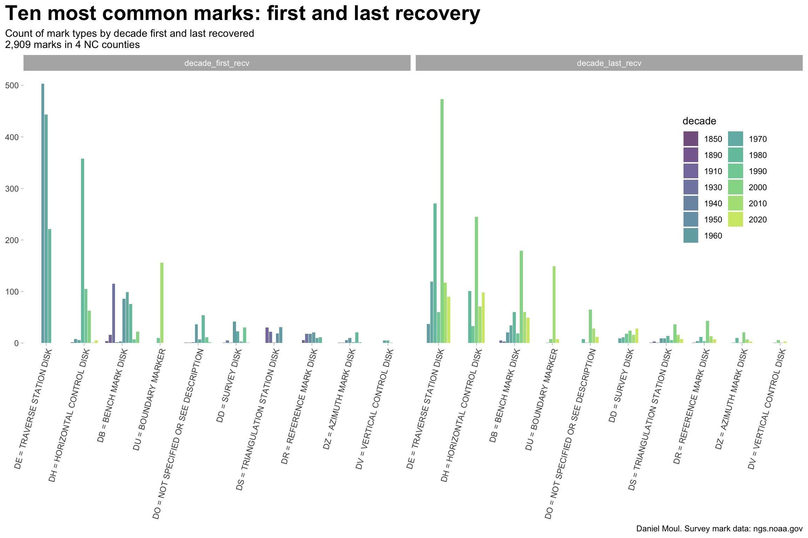
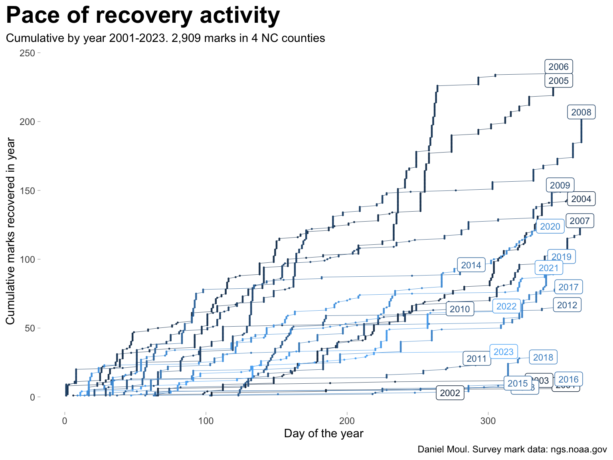
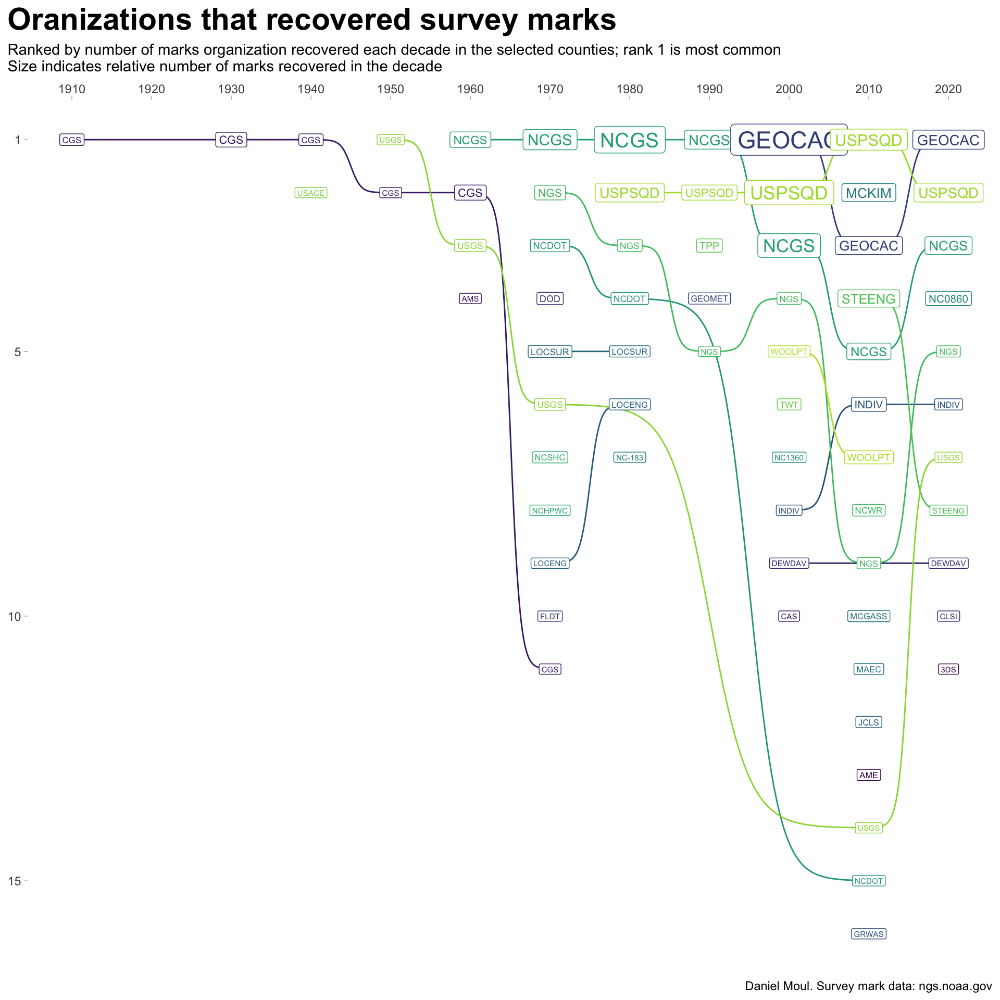

The geographical distribution of marks looks like a road network, because at least in these counties, survey marks are mostly located on or near roads.1
There are many kinds of marks (Section 7.4). The most common are marks determining horizontal location: Transverse Station marks and their predecessors Horizontal Control Disks, Reference Marks, and Boundary Marks. Vertical location marks include Bench Marks and Vertical Control Marks. There are many times more marks focused on horizontal location than elevation. Less common mark types are shown in Figure 7.1.
Show the code
data_for_plot <- nc_marks_counties |>st_drop_geometry() |>filter(!is.na(last_recv),!is.na(first_recv)) |>mutate(first_recv =as.numeric(str_extract(first_recv, "^[0-9]{4}")),last_recv =as.numeric(str_extract(last_recv, "^[0-9]{4}")) ) |>mutate(decade_first_recv =floor(first_recv /10) *10,decade_last_recv =floor(last_recv /10) *10) |>mutate(decade_last_recv =floor(last_recv /10) *10) |>replace_na(list(setting ="0 = UNSPECIFIED SETTING",marker ="DO = NOT SPECIFIED OR SEE DESCRIPTION")) data_for_plot |>pivot_longer(cols =c(decade_first_recv, decade_last_recv),names_to ="first_or_last",values_to ="decade") |>count(first_or_last, decade, marker) |>arrange(decade) |>mutate(decade =as_factor(decade),marker =fct_reorder(marker, n, sum) ) |>mutate(marker =fct_lump_n(marker, w = n, n =10)) |>filter(marker !="Other") |>mutate(marker =fct_rev(marker)) |>ggplot(aes(marker, n, fill = decade, group = first_or_last)) +geom_col(show.legend =TRUE,alpha =0.7,position =position_dodge2(preserve ="single")) +scale_y_continuous(expand =expansion(mult =c(0, 0.05))) +scale_fill_viridis_d(end =0.9) +guides(fill =guide_legend(ncol =2)) +facet_wrap( ~first_or_last) +theme(legend.position =c(0.9, 0.6),axis.text.x =element_text(angle =75,hjust =1)) +labs(title ="Ten most common marks: first and last recovery",subtitle =glue("Count of mark types by decade first and last recovered","\n{comma(n_marks_counties)} marks in {n_counties} NC counties"),x =NULL,y =NULL,caption = my_caption )

Figure 2.3: Survey and bench mark types: first and last recovery
2.3 Mark recovery activity
In recent years the last recovered date includes month and day, which reveals the varying amounts of activity in different years and the burstiness (near-vertical lines) in some years (Figure 2.4). Compare years of greatest activity with the densest sections of Figure 7.2 panel A.
Show the code
data_for_plot <- nc_marks_counties |>st_drop_geometry() |>mutate(last_rec_yday =yday(last_recv),year =year(last_recv),tmp =1) |>filter(year >2000) |>arrange(year, last_rec_yday) |>mutate(idx =row_number(),cum_mark =cumsum(tmp),.by =c(year))data_for_plot_label <- data_for_plot |>filter(cum_mark ==max(cum_mark),.by = year)data_for_plot |>ggplot(aes(last_rec_yday, cum_mark, color = year, group = year)) +geom_line(linewidth =0.15,show.legend =FALSE) +geom_point(size =0.2,show.legend =FALSE) +geom_label(data = data_for_plot_label,aes(label = year),size =3,show.legend =FALSE) +labs(title ="Pace of recovery activity",subtitle =glue("Cumulative by year 2001-2023. {comma(n_marks_counties)} marks in {n_counties} NC counties"),x ="Day of the year",y ="Cumulative marks recovered in year",caption = my_caption )

Figure 2.4: Pace of recovery activity
Marks have been recovered by public and private agencies, voluntary groups, and individuals. In each decade since 1980, in these in these four counties, voluntary groups (notably the U.S. Power Squadron) or other geocaching hobbyists have recovered the most marks, the second-most, or both (Figure 2.5).
Show the code
nc_marks_counties |>st_drop_geometry() |>filter(!is.na(last_recv),!is.na(last_recby), last_recby !="NONE") |>mutate(decade =floor(year(last_recv) /10) *10) |>count(decade, last_recby) |>group_by(decade) %>%mutate(decade_rank =nrow(cur_data()) -rank(n, ties.method ="first") +1,last_recby_label =glue("{last_recby}: {n}")) |>ungroup() |>select(decade, last_recby, decade_rank, n, last_recby_label) |>ggplot(aes(decade, decade_rank, color = last_recby)) +geom_bump(show.legend =FALSE) +geom_point(show.legend =FALSE) +geom_label(aes(label = last_recby, size = n),show.legend =FALSE) +scale_x_continuous(position ="top",breaks =1910+ (0:11) *10) +scale_size_continuous(range =c(2, 6)) +scale_y_reverse(breaks =c(1, 5, 10, 15, 20)) +scale_color_viridis_d(end =0.9) +labs(title ="Oranizations that recovered survey marks",subtitle =glue("Ranked by number of marks organization recovered each decade in the selected counties; rank 1 is most common","\nSize indicates relative number of marks recovered in the decade"),x =NULL,y =NULL,caption = my_caption )

Figure 2.5: Oranizations ranked by number of recovered survey marks each decade
The U.S. Coast & Geodetic Survey (CGS) is now called the National Geodetic Survey (NGS).2 and is part of the National Ocean Service (still part of NOAA).
Table 2.1 includes the name associated with each abbreviation used in Figure 2.5 as well as total marks recovered in all decades.